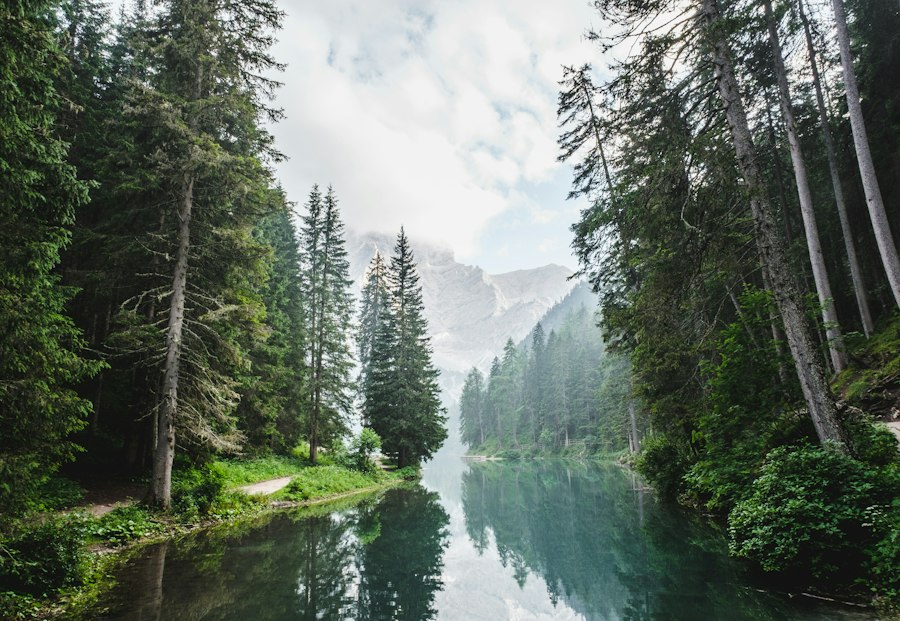
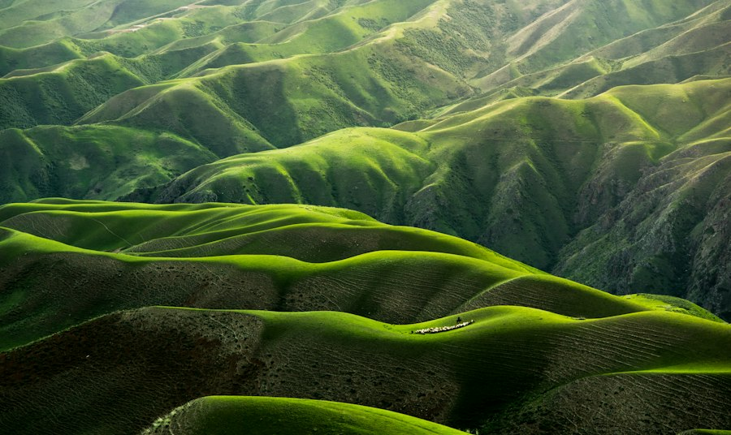

The hardest Grid concept for me to understand was how the auto-placement algorithm decides where items land when the container size changes. I kept thinking in terms of fixed widths, so the moment I used repeat(auto-fit, minmax(240px, 1fr)) and saw the columns shrink and grow automatically, it finally clicked. I had to look up how grid-auto-flow and minmax work together so the items would keep a balanced layout instead of collapsing awkwardly. I have seen this exact pattern in the wild on photo galleries and magazine-style homepages, especially on Pinterest-like browsing layouts where a featured image stretches across multiple columns while the rest are neatly tiled around it.